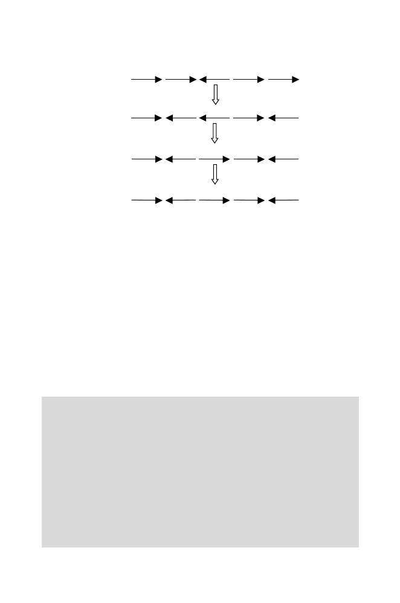

134
5 Genome Rearrangements
J
:
1 [ 5 2 3 4 ]
1 [ 4 3
2 ] 5
1 [ 2 3 ] 4
5
K
:
1 3 2 4 5
We notice that the alternating color edge-disjoint decomposition into the
maximum number of cycles is now easy. This is a general property of the anal-
ysis of signed reversals. It is accomplished by choosing an edge and following
the alternating edge-vertex path until returning to the beginning. There are
no choices to make. A challenging problem became easy with the addition of
biological detail.
Let’s remember again at this point why we are going through all of this.
What we are extracting is the set of ˜
d
(
X, Y
) from a collection of related
genomes. These are pairwise differences, or distances. It turns out that if we
have a collection of
m
genomes and all of the
m
(
m
−
1)
/
2 pairwise differences
between them, we can build a phylogenetic tree that reveals the relationships
among the genomes. This sort of approach has been used by different investiga-
tors to analyze mitochondrial genomes (Sankoff et al., 1992) and herpesvirus
genomes (Hannenhalli et al., 1995). A discussion of approaches to genome
reconstruction is provided by Bourque and Pevzner (2002).
Computational Example 5.1: Determination of reversal distance
d
(
X, Y
)
between genome
X
and genome
Y
Given two related genomes containing the same set of conserved segments,
but in different orders and orientations:
Step 1: Label the ends of each conserved segment
i
as
ia
and
ib
, for all
l
≤
i
≤
n
, where
n
is the number of conserved segments. These labeled ends
will be the vertices of the graph.
Step 2: Write down in order the ends of the oriented conserved segments in
the sequence that they occur in genome
X
.
Step 3: Add 0 at the beginning of the permutation representing genome
X
,
and add
n
+ 1 at the end of the permutation.
Step 4: Repeat steps 2 and 3 for genome
Y
.